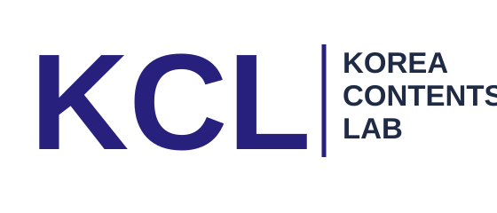

Issue Intake
이슈 입력
Weekly Radar
수집된 규제 이슈
Top 3 Analysis
이번 주 총괄 분석
YouTube Production Brief
영상 콘텐츠 기획안
Practical Script Archive

Korea Regulation Reform Strategy Studio
매주 언론 보도, 정부 보도자료, 공기업·민간 요구, 유튜브 반응을 종합해 규제 개선 이슈 3건과 영상 기획안을 만드는 모바일 대응 웹앱입니다.
Issue Intake
Weekly Radar
Top 3 Analysis
YouTube Production Brief
Practical Script Archive